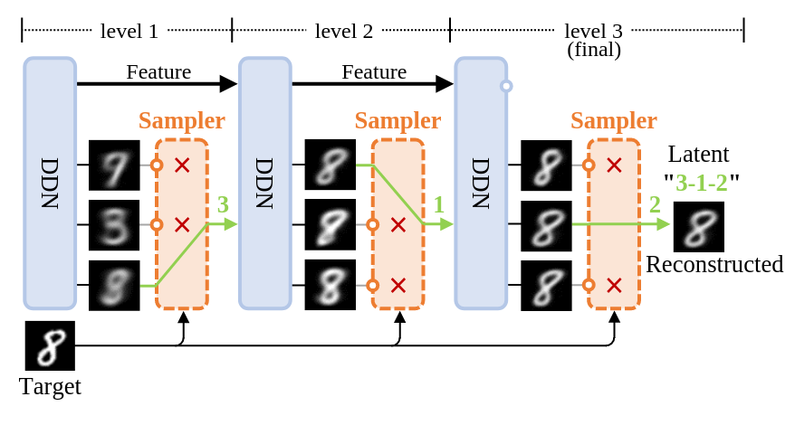
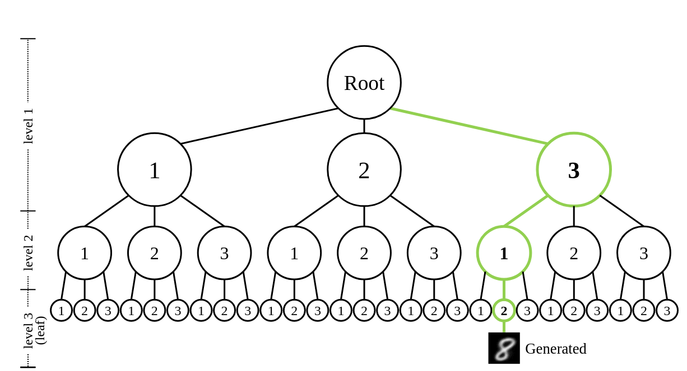
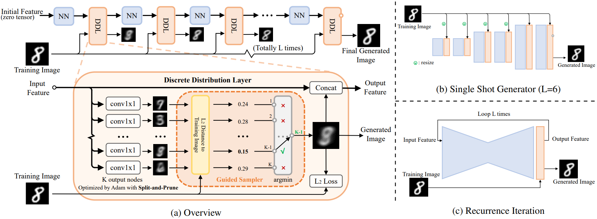
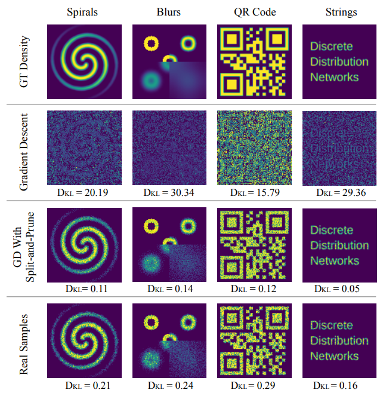
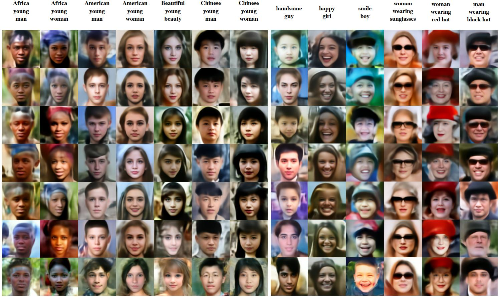
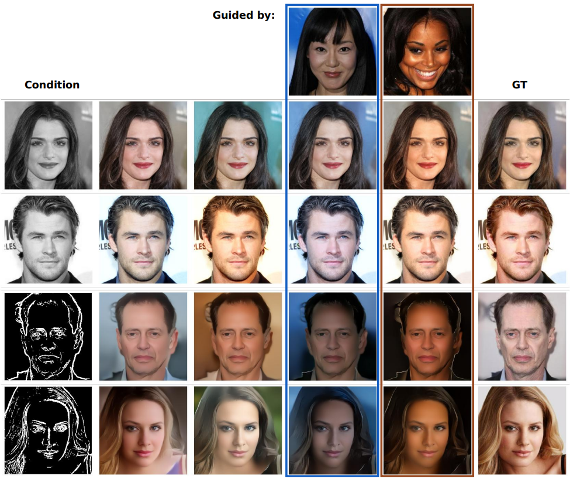
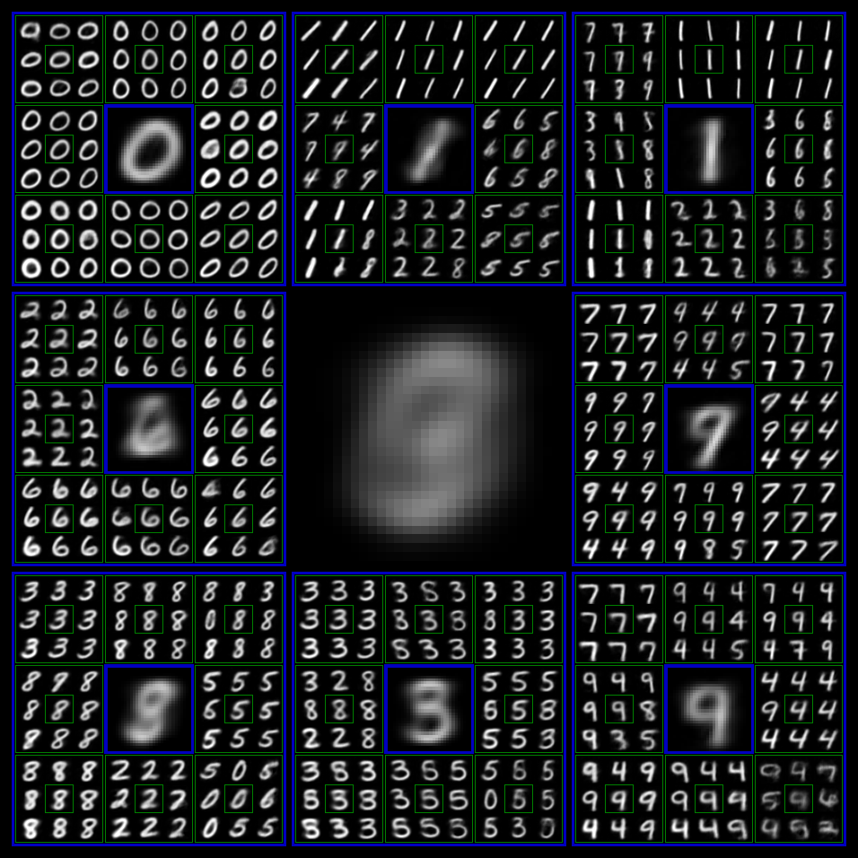

🥳 Accepted by ICLR 2025
🚀 The code has been released
Discrete Distribution Networks
A novel generative model with simple principles and unique properties
Paper 📄 | Code 👨💻 | OpenReview 💬 | Poster 🖼️

Details of density estimation
This GIF demonstrates the optimization process of DDN for 2D probability density estimation:
- Left image: All samples that can currently be generated
- Right image: Target probability density map
- For demonstration purposes, the target probability density maps switch periodically
- Names and sequence of target probability maps:
blur_circles->QR_code->spiral->words->gaussian->blur_circles(same at beginning and end, completing a cycle) - Therefore DDN continuously optimizes parameters to fit new distributions
- Optimizer: Gradient Descent with Split-and-Prune
- This only shows experimental results with 1000 nodes; for a clearer and more comprehensive view of the optimization process, see the 2D Density Estimation with 10,000 Nodes DDN page
- The experiment code is in sddn/toy_exp.py, and the experimental environment is provided by the distribution_playground library, feel free to play with it yourself
Contributions of this paper:
- We introduce a novel generative model, termed Discrete Distribution Networks (DDN), which demonstrates a more straightforward and streamlined principle and form.
- For training the DDN, we propose the Split-and-Prune optimization algorithm, and a range of practical techniques.
- We conduct preliminary experiments and analysis on the DDN, showcasing its intriguing properties and capabilities, such as zero-shot conditional generation without gradient and distinctive 1D discrete representations.
 
{kind=link}
{kind=link}
Left: Illustrates the process of image reconstruction and latent acquisition in DDN. Each layer of DDN outputs
Right: Shows the tree-structured representation space of DDN's latent variables. Each sample can be mapped to a leaf node on this tree.
Reviews from ICLR:
I find the method novel and elegant. The novelty is very strong, and this should not be overlooked. This is a whole new method, very different from any of the existing generative models.
This is a very good paper that can open a door to new directions in generative modeling.
We introduce a novel generative model, the Discrete Distribution Networks (DDN), that approximates data distribution using hierarchical discrete distributions. We posit that since the features within a network inherently capture distributional information, enabling the network to generate multiple samples simultaneously, rather than a single output, may offer an effective way to represent distributions. Therefore, DDN fits the target distribution, including continuous ones, by generating multiple discrete sample points. To capture finer details of the target data, DDN selects the output that is closest to the Ground Truth (GT) from the coarse results generated in the first layer. This selected output is then fed back into the network as a condition for the second layer, thereby generating new outputs more similar to the GT. As the number of DDN layers increases, the representational space of the outputs expands exponentially, and the generated samples become increasingly similar to the GT. This hierarchical output pattern of discrete distributions endows DDN with unique properties: more general zero-shot conditional generation and 1D latent representation. We demonstrate the efficacy of DDN and its intriguing properties through experiments on CIFAR-10 and FFHQ.
{kind=link}
DDN enables more general zero-shot conditional generation. DDN supports zero-shot conditional generation across non-pixel domains, and notably, without relying on gradient, such as text-to-image generation using a black-box CLIP model. Images enclosed in yellow borders serve as the ground truth. The abbreviations in the table header correspond to their respective tasks as follows: “SR” stands for Super-Resolution, with the following digit indicating the resolution of the condition. “ST” denotes Style Transfer, which computes Perceptual Losses with the condition.
Overview of Discrete Distribution Networks

{kind=link}
(a) The data flow during the training phase of DDN is shown at the top. As the network depth increases, the generated images become increasingly similar to the training images. Within each Discrete Distribution Layer (DDL),
The DDN model consists of
{kind=link}
Here,
Toy examples for two-dimensional data generation

The numerical values at the bottom of each figure represent the Kullback-Leibler (KL) divergence. Due to phenomena such as “dead nodes” and “density shift”, the application of Gradient Descent alone fails to properly fit the Ground Truth (GT) density. However, by employing the Split-and-Prune strategy, the KL divergence is reduced to even lower than that of the Real Samples.
{kind=link}
Zero-Shot Conditional Generation guided by CLIP

{kind=link}
The text at the top is the guide text for that column.
Conditional DDN performing coloring and edge-to-RGB tasks

{kind=link}
Columns 4 and 5 display the generated results under the guidance of other images, where the produced image strives to adhere to the style of the guided image as closely as possible while ensuring compliance with the condition. The resolution of the generated images is 256x256.
Hierarchical Generation Visualization of DDN

{kind=link}
We trained a DDN with output level